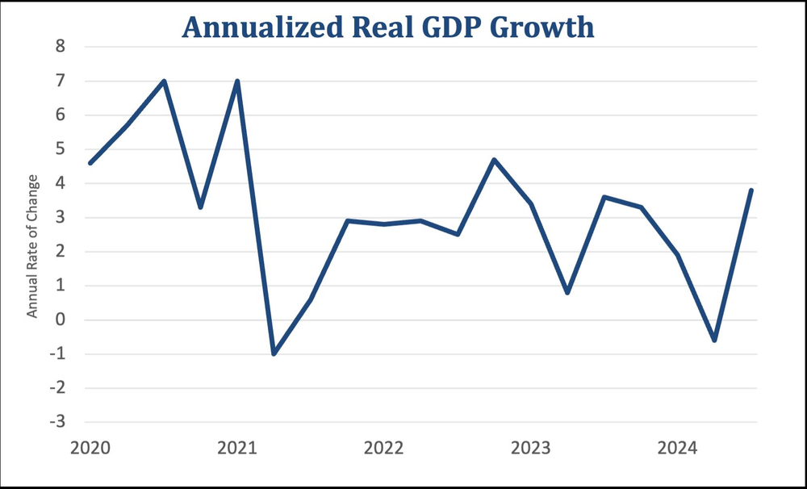
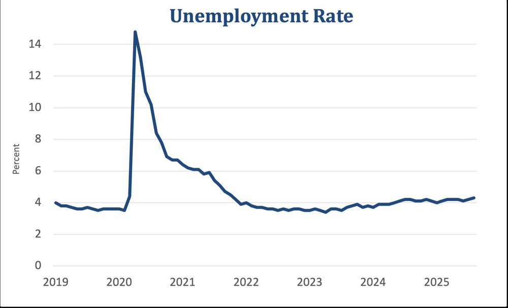
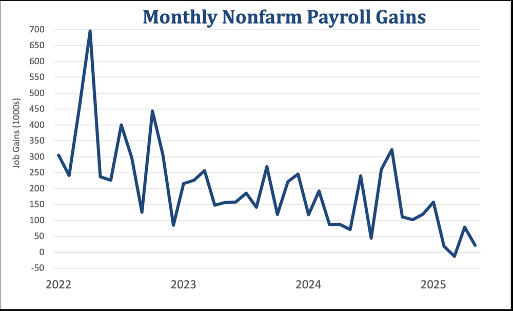
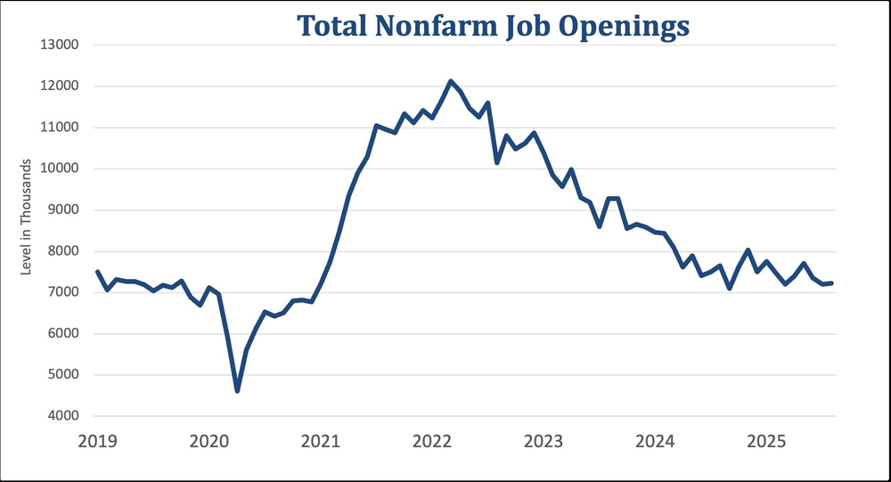
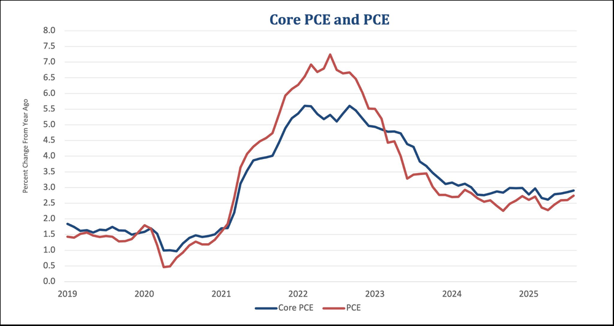
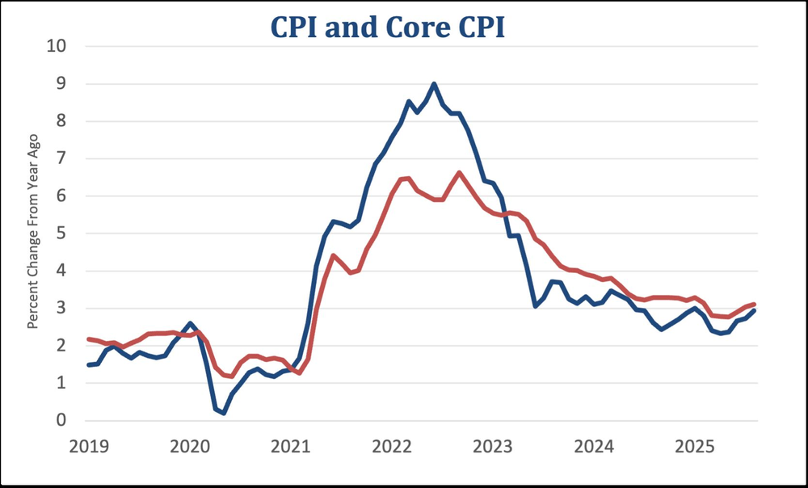
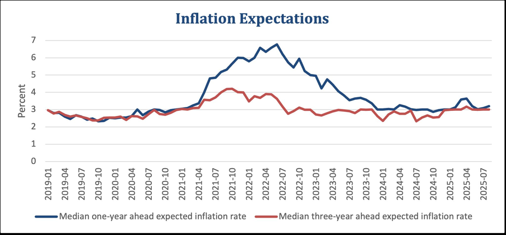
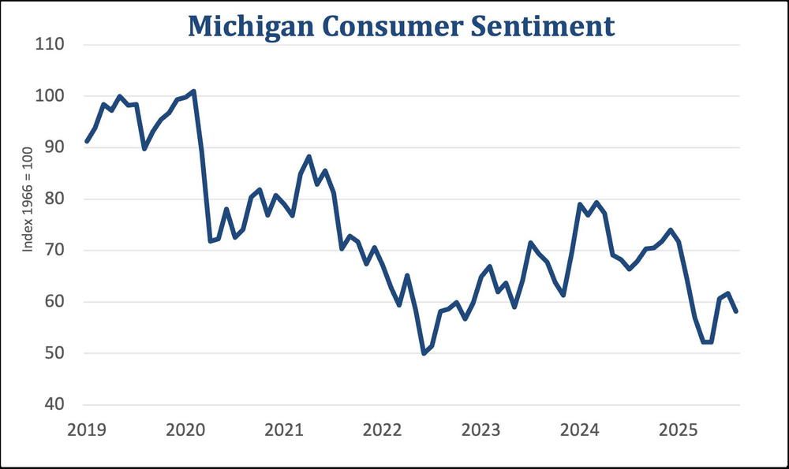
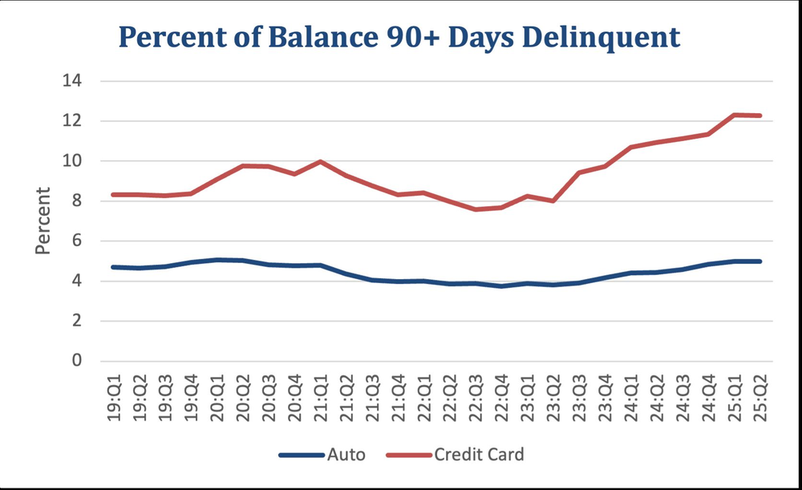
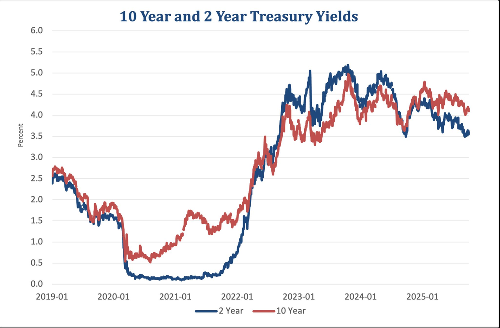

Cameron Maddock · University of Michigan team · Finished 4th of 118 schools nationwide · Data as of September 2025
The committee had to decide whether the balance of risks called for a change in the federal funds rate. Inflation is still above the Fed’s 2% target, but the labor market is weakening, and the demand side of that weakness is the more urgent risk.
Recommendation
Lower the federal funds rate by 25 basis points, to a range of 3.75–4.00%.
Growth
Strong headline, weak foundation.
Real GDP grew at an annualized rate of 3.8% in the second quarter. That was a final revision up from 3.3%, and it followed a 0.6% contraction in the first quarter. The revision came from consumer spending.

Annualized real GDP growth. Source: BEA (as shown in the 2025 deck).
The composition matters more than the headline. Real final sales to private domestic purchasers grew 2.9%, the same pace as in the first quarter. Net exports added 4.83 points to second-quarter GDP, but only because imports fell at a 29.3% annualized rate. That drop reflects businesses and consumers unwinding inventories stockpiled in the first quarter ahead of tariffs.
Fixed nonresidential investment contributed 0.77 points in the second quarter, down from 1.21 in the first. Our reading was that this growth is not durable. Much of the weakness also comes from factors outside the Fed’s control, such as foreign policy and immigration.
Labor
Demand is the more pressing risk.
Supply and demand both appear to be weakening at once. If the two offset each other, the market can stay in balance. The question is whether one side is deteriorating faster than the other.

Unemployment rate. Source: BLS (as shown in the 2025 deck).

Monthly nonfarm payroll gains, thousands. Source: BLS (as shown in the 2025 deck).
The August unemployment rate was 4.3%, the highest in nearly four years. The economy added only 29,000 jobs in August, down from 73,000 in July and well below the 2024 average of 186,000 a month. BLS had no September data because of a lapse in appropriations. Private surveys from ADP, Revelio, and Indeed point to weak job growth continuing.
Supply
Slower population growth is the main reason job growth has slowed. An AEI estimate puts potential monthly job growth at 10,000 to 40,000 in the second half of 2025, compared with 140,000 to 180,000 in 2024. Quit and layoff rates held steady in August, which points to a frozen market rather than a collapse.
Demand
Outside health care and education, industries lost an average of 13,000 jobs each in August. Job openings were 7.2 million, and there were more unemployed people than openings for the first time since 2021.

Total nonfarm job openings, thousands. Source: BLS (as shown in the 2025 deck).
Large downward revisions to the last two job reports suggest demand may be weakening more than we can see in real time. An early estimate also points to a downward revision of 911,000 jobs between April 2024 and March 2025.
Discouraged workers numbered about 492,000 in August, up 40,000 from July. Federal hiring is falling sharply, with 300,000 fewer federal workers expected by year-end than in January, the largest 12-month reduction since 1946.
Prices
Elevated, but expectations are anchored.
CPI rose 2.9% in August, and core CPI rose 3.1% for the third month in a row. Core PCE, the Fed’s preferred gauge, rose 2.9% over the year, and headline PCE rose 2.7%.

Core PCE and PCE, percent change from a year ago. Source: BEA (as shown in the 2025 deck).

CPI and core CPI, percent change from a year ago. Source: BLS (as shown in the 2025 deck).

Median one- and three-year ahead inflation expectations. Source: NY Fed (as shown in the 2025 deck).
Monthly, goods prices rose 0.1% after falling 0.1% in July, and services rose 0.3%. Producer prices for final demand fell 0.1% in August.
Tariffs
The key question is whether tariffs create a persistent push on prices or a one-time shock. Firms stockpiled inventories before tariffs took effect, so some costs have not passed through yet. Given historical pass-through, we believe the effects are more likely temporary than entrenched, but we need to watch the next six months.
Expectations and wages
The New York Fed’s median one-year-ahead expectation rose to 3.2%, and the three-year measure held at 3.0%. Both are above 2%, but stable and in line with pre-pandemic norms. A recent paper by Nakamura et al. (2025) argues that the Fed’s credibility gives it room to look through short-run price shocks. Median wage growth has declined since June 2024.
Consumers and markets
Stressed, but not breaking.
PCE spending rose from 2.5% over the year in July to 2.7% in August. Confidence is weaker. The Michigan consumer expectations index fell to 55.1 in September, and about 60% of consumers expect unemployment to rise over the next year, the highest share since the Great Recession.

University of Michigan consumer sentiment. Source: UMich Survey of Consumers (as shown in the 2025 deck).
Balance sheets
The average saving rate in 2025 has been about 4.5%, below the roughly 6% average before the pandemic. Bank of America data show median checking and savings balances for every income group are higher than in 2019. The New York Fed reports credit card and auto delinquencies were elevated but stable across the first two quarters of 2025.

Share of balance 90+ days delinquent, auto and credit card. Source: NY Fed (as shown in the 2025 deck).
Markets
The two-year Treasury yield is 3.52%, about 60 basis points below the ten-year. The July and August job reports each moved rates down by about 20 basis points, which shows markets pricing in cuts in response to weak labor demand.

2-year and 10-year Treasury yields. Source: Federal Reserve Board (as shown in the 2025 deck).
The VIX spiked above 50 in April and has since fallen to a range of 12 to 15. Many observers, Chair Powell among them, have called equity prices “fairly highly valued,” so low volatility may understate recession risk.
The decision
The balance of risks has shifted toward weakness in labor demand. Inflation is still above target, but well-anchored expectations let us look through short-run tariff effects while we address the more urgent threat. The median Fed official expects 50 basis points of further cuts in 2025.
The recommendation was a small, measured cut that provides insurance against further demand-driven slowdowns. The committee voted unanimously in favor, while agreeing to monitor labor data, inflation expectations, and inflation itself during the rate-cutting cycle.
My role and contact
I chaired the team and created the graphs. I contributed heavily to the research and the narrative, and in the presentation I covered the August jobs data, inflation expectations, consumer spending, the yield curve, and the recommendation.
I am a senior studying economics at the University of Michigan, applying to jobs in finance and monetary policy. Contact: cmaddock@umich.edu